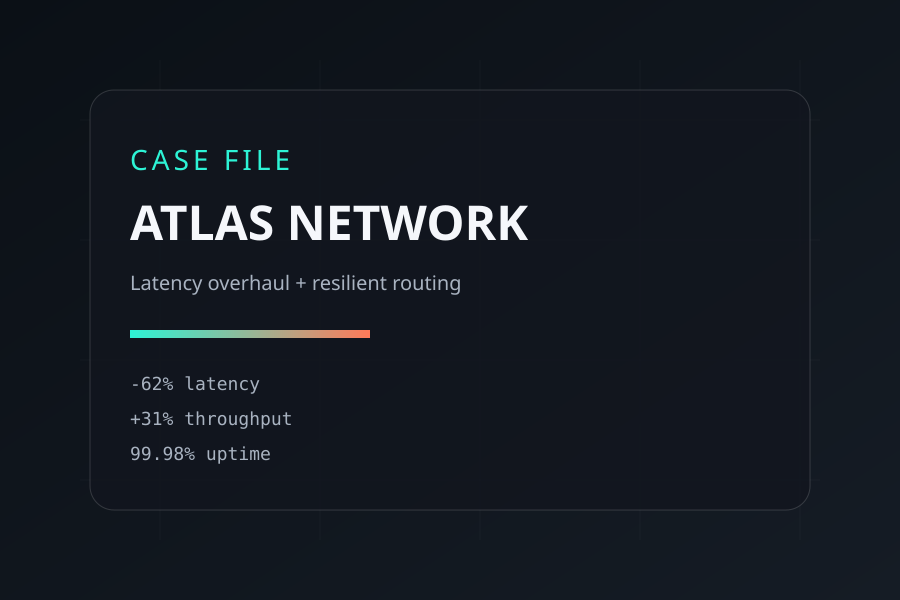

ATLAS_NETWORK
A multi-region routing stack rebuilt for resilience. We redesigned the edge logic, tuned the data plane, and cut user-facing latency without sacrificing observability.

OBJECTIVE
Stabilize global routing during traffic spikes, minimize cross-region latency, and introduce continuous verification for failover paths.
SCOPE
- Edge routing rewrite with adaptive health scoring.
- Backplane observability for failure domains.
- Security hardening for auth and sync services.
OUTCOMES
PHASE 01 — DIAGNOSTIC
Mapped failure domains and created a latency atlas of every region pair. We collected live traffic data to identify bottlenecks and unstable routing heuristics.
PHASE 02 — REDESIGN
Introduced weighted routing decisions, adaptive health checks, and automatic circuit breakers. The edge layer now makes resilient choices within 120ms.
PHASE 03 — HARDENING
Automated game days, chaos drills, and rollback testing. Added integrity checks for auth tokens and encrypted telemetry across regions.
READY FOR YOUR OWN REDESIGN?
We can run the diagnostic, map your failure domains, and build a plan that delivers measurable gains in weeks, not quarters.